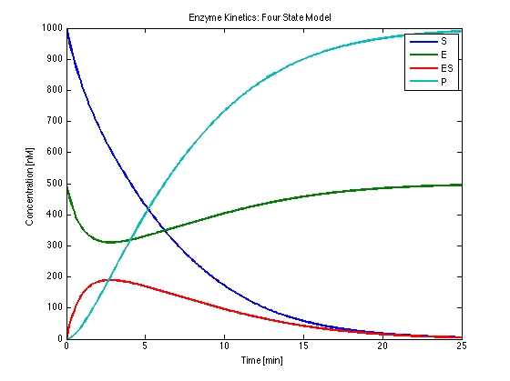
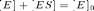
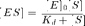
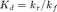
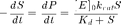
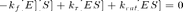
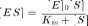
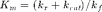
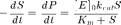
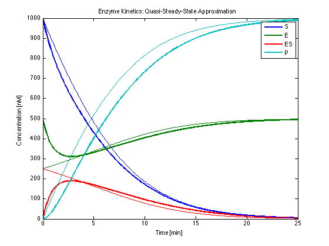

Enzyme Kinetics
File: Ch24_EnzymeKinetics.m
Enzymes catalyze the conversion of substrates through a two step process. A simple kinetic model is demonstrated below. Additional analysis of this system leads to a simplified model known as the Michaelis-Menton kinetics.
Contents
Reactions catalyzed by an enzyme
An enzyme E binds reversibly with a substrate S. Constants kr and kf are relatively small. The enzyme-substrate complex reacts to form a product P and release the enzyme.
kf kcat
E + S <==> ES ----> E + P
krParameter Values
kcat = 0.5; % 1/min kf = 0.5e-3; % 1/min/nM nM == [nmol/L] kr = 0.5e-4; % 1/min
Differential Equations
The differential equations are standard mass balances assuming mass-action kinetics.
Sdot = @(E,S,ES,P) -kf*E*S + kr*ES; Edot = @(E,S,ES,P) -kf*E*S + kr*ES + kcat*ES; ESdot = @(E,S,ES,P) +kf*E*S - kr*ES - kcat*ES; Pdot = @(E,S,ES,P) + kcat*ES;
Initial Conditions
E0 = 500; % nM S0 = 1000; % nM ES0 = 0; % nM P0 = 0; % nM
Numerical Solution
ode45 adequately solves this system of differential equations for the parameters values given above. More extreme choices of parameters resulting in divergent time scales may cause ode45 to fail. In those sitautions ode15s may be a more appropriate solver for stiff equations.
Note that the solution process is broken into four steps:
- Developing a function and initial conditions to represent the differential equations.
- Computing a solution using ode45.
- Evaluating the solution for a specific time grid using deval.
- Displaying the solution.
% Differential equations and initial conditions deriv = @(t,x) [ ... Sdot(x(1),x(2),x(3),x(4)); Edot(x(1),x(2),x(3),x(4)); ESdot(x(1),x(2),x(3),x(4)); Pdot(x(1),x(2),x(3),x(4))]; x0 = [S0;E0;ES0;P0]; % Compute solution soln = ode45(deriv,[0 25],x0); % Evaluate solution t = 0:0.1:25; x = deval(soln,t); % Display solution figure(1);clf; plot(t,x,'Linewidth',2); xlabel('Time [min]'); ylabel('Concentration [nM]'); title('Enzyme Kinetics: Four State Model'); legend('S','E','ES','P');
Michaelis-Menten Approximation
The Michaelis-Menten rate expression is an approximation to the detailed kinetic model. The key ideas are to recognize that  by mass conservation, and to assume the reversible reaction
kf
E + S <==> ES
kris always at equilibrium. Under this assumption the concentration of ES is given by

where . The resulting kinetic model is

Kd = kr/kf; RateMM = @(S) E0*kcat*S/(Kd + S); derivMM = @(S) [ ... -RateMM(S); +RateMM(S)]; solnMM = ode45(@(t,x)derivMM(x(1)),[0 25],[S0;P0],odeset('RelTol',1e-6)); S = deval(solnMM,t,1); P = deval(solnMM,t,2); ES = E0*S./(Kd + S); E = E0 - ES; figure(2);clf; plot(t,x,'LineWidth',2); hold on; plot(t,[S;E;ES;P]); hold off; xlabel('Time [min]'); ylabel('Concentration [nM]'); title('Enzyme Kinetics: Michaelis-Menten Approximation'); legend('S','E','ES','P');

Quasi-Steady-State Approximation (QSSA)
The Quasi-Steady-State approximation (sometimes called the Briggs-Haldane approximation) is derived assuming that E and ES are at steady-state, that is

The resulting expression for [ES} is is given by

where . The kinetic model is

Km = (kr + kcat)/kf; RateQSSA = @(S) E0*kcat*S/(Km + S); derivQSSA = @(S) [ ... -RateQSSA(S); +RateQSSA(S)]; solnQSSA = ode45(@(t,x)derivQSSA(x(1)),[0 25],[S0;P0]); S = deval(solnQSSA,t,1); P = deval(solnQSSA,t,2); ES = E0*S./(Km + S); E = E0 - ES; figure(3);clf; plot(t,x,'LineWidth',2); hold on; plot(t,[S;E;ES;P]); hold off; xlabel('Time [min]'); ylabel('Concentration [nM]'); title('Enzyme Kinetics: Quasi-Steady-State Approximation'); legend('S','E','ES','P');
Questions
- Explain the key differences between the Michaelis-Menten and Quasi-Steady-State approximations.
- Under what conditions would you expect the Michaelis-Menten approximation to do a good job? Modify these simulations to test your answer.
- The Michaelis-Menten and QSSA kinetic models have identical form, but different interpretations in terms of the underlying kinetic model. How could experimentally distinguish which approximation pertains to a particular situation?